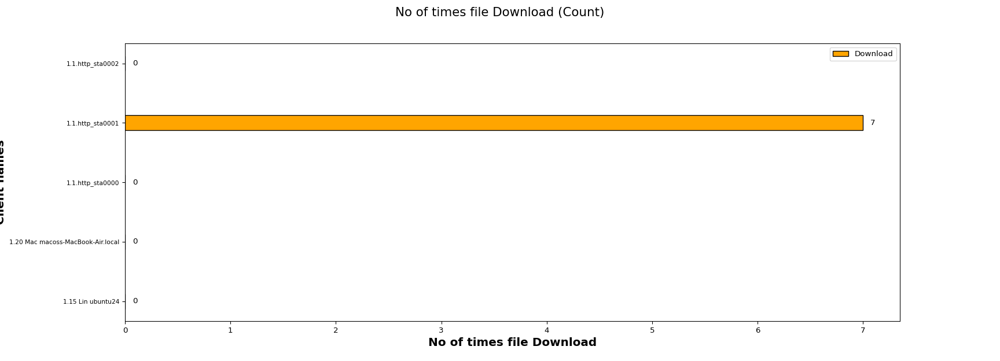
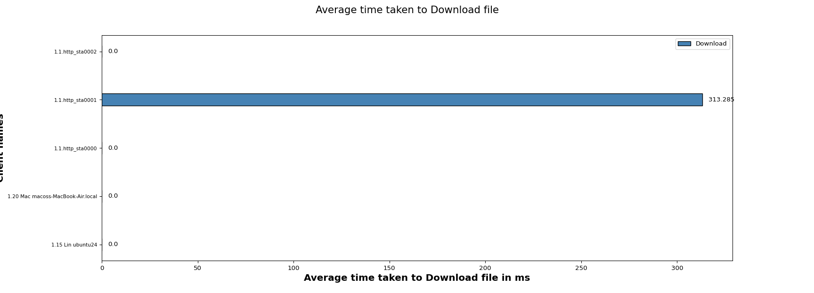

| Test Setup Information |
|
||||||||||||||||||||||||||||||||||||||||||||
The HTTP Download Test is designed to verify that N clients connected on specified band can download some amount of file from HTTP server and measures the time taken by the client to Download the file.
The below graph represents number of times a file downloads for each client. X- axis shows “No of times file downloads and Y-axis shows Client names.

The below graph represents average time taken to download for each client . X- axis shows “Average time taken to download a file ” and Y-axis shows Client names.

This Table will provide you information of the minimum, maximum and the average time taken by clients to download a webpage in seconds
| Minimum | Maximum | Average |
|---|---|---|
| 0.0 | 0.3 | 0.2 |
| Clientss | Client Type | Device Type | MAC | Channel | SSID | Mode | RSSI | BSSI | No of times File downloaded | Average time taken to Download file (ms) | Bytes-rd (Mega Bytes) | Rx Rate (Mbps) | Failed url's |
|---|---|---|---|---|---|---|---|---|---|---|---|---|---|
| 1.15.sta0 | Linux/Interop | Real | c:5f:67:0c:05:86 | -1 | N | AUTO 20 1x1 | 0 dBm | 0 | 0.000 | 0.0 | 0.0000 | 0 | |
| 1.20.en0 | Mac OS | Real | 30:35:ad:c5:e1:be | -1 | N | AUTO 20 1x1 | 0 dBm | 0 | 0.000 | 0.0 | 0.0000 | 0 | |
| 1.1.http_sta0000 | - | Virtual | 04:f0:21:94:8e:46 | -1 | N | AUTO 20 1x1 | 0 dBm | 0 | 0.000 | 0.0 | 0.0000 | 0 | |
| 1.1.http_sta0001 | - | Virtual | 04:f0:21:94:9f:46 | 11 | NETGEAR_2G_wpa2 | 802.11bgn 20 2x2 | -11 dBm | 94:A6:7E:74:26:22 | 7 | 313.285 | 14.0 | 2.2941 | 0 |
| 1.1.http_sta0002 | - | Virtual | 04:f0:21:94:99:46 | 11 | NETGEAR_2G_wpa2 | 802.11abgn-BE 20 2x2 | -34 dBm | 94:A6:7E:74:26:22 | 0 | 0.000 | 0.0 | 0.0000 | 0 |